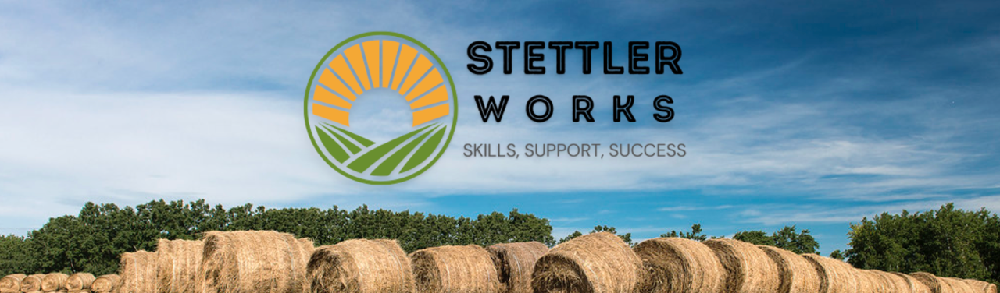

☰
Home
Business Resource Hub
Small Business Resources
Agriculture Resources
Support Tools
Agriculture Programs and Services
Agri-Tech and Tools
Connect with Experts
Find a Business
Economic Dashboard
Training & Skills Development
Training Calendar
Local Resources
Sustainability and Workforce Projects
Volunteer and Contribute
Available Properties
Community Infrastructure
Zoning and Policy Information
Job Supports
Job Ready Tools & Employer Listing for Small Business
Job Ready Tools & Employer Listing for Agriculture
Job Board
Support Centre
Ask a Question
FAQs

Economic News and Success Story
Lacombe-based Beretta Farms expands facilities with $1.2 million provincial tax credit
Is there a skills gap in Alberta's labour market? Two economists weigh in
Central Alberta municipalities seeking input from local businesses on impact of potential tariffs
Success Story of the Month
Resources/ Job Seekers
I'm a Small Business
I'm a Agriculture Business
I'm looking for Work or Training for
Small Business
I'm looking for Work or Training for Agriculture
Community Data
Economic Dashboard
Find a Business
Job Board
Community Infrastructure